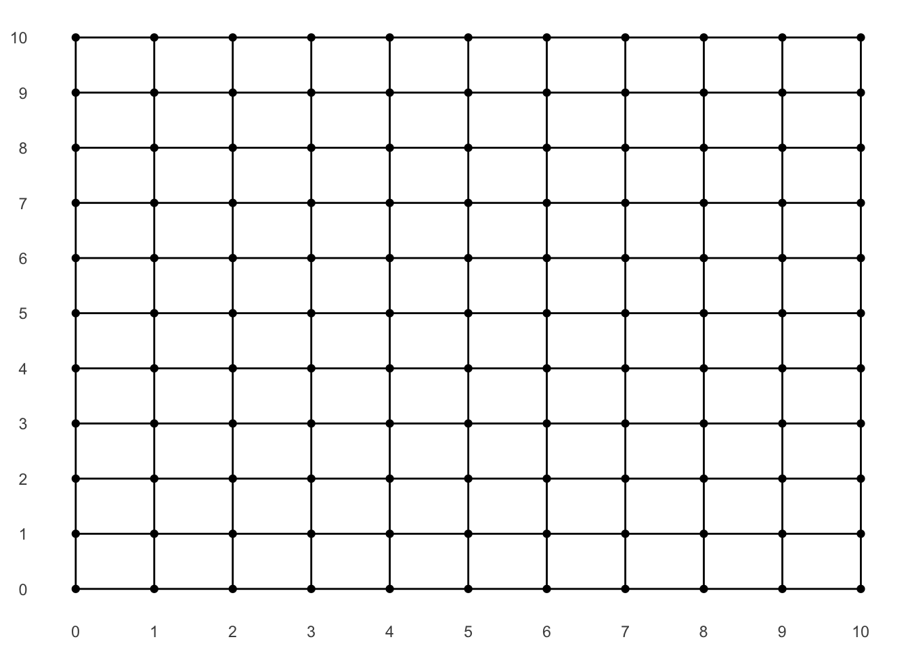

If you ask your preferred map app to direct you along a walking route through a gridded urban layout (like New York’s), it will often present you with an “L”-shaped path. Here’s one from Google Maps showing Mount Sinai to Presbyterian:

While directions comprised of a single turn are simple, both logistically and visually, I’ve always reserved some skepticism for using them as a recommended route since I always intend on “zig-zagging” my way through the grid.
Why? Well the idea is pretty simple and possibly something you already do, whether intentionally or not. If you walk entirely along one axis and then entirely along the other to reach your destination, you’re wasting time in two distinct ways. First, you have to wait for “Walk” signs on the first leg before the turn; but then you’re forced to wait for them on the second leg since you no longer have the option of covering ground in the perpendicular direction.
For clarity, consider the example route from above. If you move South exclusively until you get to the turn at 70th St., you will have waited for some “Don’t Walk” signs instead of taking the opportunity to make some horizontal progress by turning left, which by definition will be available since traffic won’t be stopped in both directions. Even worse, once you do start traveling East along 70th St., you have to wait for “Don’t Walk” signs whether you’d like to or not, since now the alternative of moving vertically will take you further from your endpoint.
The better approach is to not only turn whenever confronted with a Don’t Walk sign, but to stay as close as you can to the diagonal so that you have the option of traveling along either axis for as long as possible. So something more like:

How much time could this really save you? Well let’s simulate it with some realistic parameters. Imagine a 10 x 10 grid where you’re traveling from the bottom left to the top right.
library(tidyverse)
library(gganimate)
set.seed(0)
height <- 10
width <- 10
grid <- expand.grid(
x = 0:width,
y = 0:height
)
# intersections that are next to eachother
neighbors <- grid %>%
rename(x1 = x,
y1 = y) %>%
crossing(grid %>%
rename(x2 = x,
y2 = y)) %>%
filter(x2 >= x1, y2 >= y1) %>%
filter(x2 - x1 + y2 - y1 == 1)
grid_graph <- grid %>%
ggplot(aes(x, y)) +
geom_point() +
theme_minimal() +
geom_segment(aes(x = x1, y = y1, xend = x2, yend = y2),
data = neighbors) +
scale_x_continuous(breaks = 0:width) +
scale_y_continuous(breaks = 0:height) +
theme(panel.grid.major = element_blank(),
panel.grid.minor = element_blank(),
panel.background = element_blank(),
axis.title = element_blank())
grid_graph
It takes you a minute to walk each unit-long segment, and at each intersection there’s a 50% chance that traffic is stopped in each of the two directions. If you hit a “Walk” sign, you can obviously continue in that direction, but if you hit a “Don’t Walk” sign you still have a 50% chance of being allowed to walk through. This stipulation mimics real-life conditions where many of us “jay walk” whenever there’s no threat of an oncoming vehicle, and also will allow us to choose to hug the diagonal path if we can. For simplicity, “Don’t Walk” signs will also be one minute in length.
First let’s define the inferior, L-shaped approach. There’s probably a pretty straightforward binomial probability mass function we could derive, but running simulations is always more fun that doing real math…
The gist of this recursive function is that, given starting and ending coordinates, it will walk as far horizontally as required and then as far vertically as required until the destination is reached:
L_walk <- function(start, end){
# flip a coin for direction of the light
light <- sample(c('x', 'y'), 1)
# walk horizontally as far as we need to
if(start[1] != end[1]) {
# delay only when we don't have light and traffic oncoming
return(bind_rows(c(start, delay = light == 'y' & rnorm(1) < 0),
L_walk(start + c(sign(end[1] - start[1]), 0),
end)))
}
# walk vertically as far as we need to
else if(start[2] != end[2]){
# delay only when we don't have light and traffic oncoming
return(bind_rows(c(start, delay = light == 'x' & rnorm(1) < 0),
L_walk(start + c(0, sign(end[2] - start[2])),
end)))
}
# end recursion if we've reached destination
else{
return(c(end, delay = 0))
}
}The “smart walk” is a little more complicated. At each intersection, it will try to cover ground in the direction with more distance to go (this will keep us as close to the diagonal as possible). If we can’t do that on account of the coincidence of a “Don’t Walk” sign and oncoming traffic, we will accept making progress in the other direction. As a last resort, we will wait for the light, which should only happen once we’re on a boundary:
smart_walk <- function(start, end){
# flip a coin for direction of the light
light <- sample(c('x', 'y'), 1)
# end recursion if we've reached destination
if(identical(start, end)){
return(c(end, delay = 0))
}
# if we have more x distance to cover than y
if(diff(abs(start - end)) < 0){
# walk horizontally if we have light or no traffic coming
if(light =='x' | rnorm(1) > 0){
return(bind_rows(c(start, delay = 0),
smart_walk(start + c(sign(end[1] - start[1]), 0),
end)))
}
# or walk vertically if we can to avoid the delay
else if(end[2] != start[2]){
return(bind_rows(c(start, delay = 0),
smart_walk(start + c(0, sign(end[2] - start[2])),
end)))
}
# last resort is accepting the delay
else{
return(bind_rows(c(start, delay = 1),
smart_walk(start + c(sign(end[1] - start[1]), 0),
end)))
}
}
# if we have more y distance to cover than x
else{
# walk vertically if we have light or no traffic coming
if(light =='y' | rnorm(1) > 0){
return(bind_rows(c(start, delay = 0),
smart_walk(start + c(0, sign(end[2] - start[2])),
end)))
}
# or walk horizontally if we can to avoid the delay
else if(end[1] != start[1]){
return(bind_rows(c(start, delay = 0),
smart_walk(start + c(sign(end[1] - start[1]), 0),
end)))
}
# last resort is accepting the delay
else{
return(bind_rows(c(start, delay = 1),
smart_walk(start + c(0, sign(end[2] - start[2])),
end)))
}
}
}Okay, let’s simulate! Below are the histograms associated with each strategy. As we might expect, the “L” walks end up being a binomial distribution centered around 25 minutes, which makes sense since with a 50% chance of “Don’t Walk” and a 50% chance of oncoming traffic, you’d expect a delay at about a quarter of the 20 intersection you must navigate. Meanwhile the “smart” walk reaches the destination without a single delay (20 minutes flat) a majority of the time:
start <- c(x = 0, y = 0)
end <- c(x = 10, y = 10)
n_sims <- 1000
L_sims <- map(1:n_sims, ~ L_walk(start, end))
L_sim_durations <- map_dbl(L_sims, ~.x %>%
summarize(duration = sum(delay) +
abs(max(x) - min(x)) +
abs(max(y) - min(y))) %>%
pull(duration))
smart_sims <- map(1:n_sims, ~ smart_walk(start, end))
smart_sim_durations <- map_dbl(smart_sims, ~.x %>%
summarize(duration = sum(delay) +
abs(max(x) - min(x)) +
abs(max(y) - min(y))) %>%
pull(duration))
rbind(
data.frame(duration = L_sim_durations, type = "L"),
data.frame(duration = smart_sim_durations, type = "smart")
) %>%
ggplot(aes(duration, fill = type)) +
geom_bar(col = "black") +
facet_wrap(~type, ncol = 1) +
theme_bw() +
theme(legend.position = "none")
And finally let’s animate an example of each approach. First we see a particularly unlucky “L” walk that includes eight delays, represented by the red circles:
# create series of steps from one intersection to next
route <- cbind(L_sims[[2]] %>% slice(-nrow(.)) %>% rename(x1 = x, y1 = y),
L_sims[[2]] %>% slice(-1) %>% transmute(x2 = x, y2 = y)
)
# bucket into frames for animation
route_frames <- map(1:nrow(route),
~route %>%
mutate(delay = lead(delay, default = 0)) %>%
slice(1:.x) %>% mutate(frame = .x,
end = row_number() == .x)) %>%
bind_rows()
# define delay length for animation
state_times <- route_frames %>%
group_by(frame) %>%
filter(row_number() == max(row_number())) %>%
ungroup() %>%
mutate(time = case_when(
frame == max(frame) ~ 5000,
delay == 1 ~ 1000,
TRUE ~ 0
)) %>%
pull(time)
# create animation
route_frames %>%
ggplot() +
geom_segment(aes(x = x1, y = y1, xend = x2, yend = y2),
size = 2,
alpha = 0.5,
color = "blue") +
# add red stop indicator at delays
geom_point(aes(x = x2, y = y2),
size = ifelse(route_frames$end, 10, 5),
alpha = ifelse(route_frames$delay == 1, 0.5, 0),
color = "red") +
transition_states(frame,
transition_length = 100,
state_length = state_times) +
geom_point(aes(x, y), data = grid) +
geom_segment(aes(x = x1, y = y1, xend = x2, yend = y2),
data = neighbors) +
theme_minimal() +
scale_x_continuous(breaks = 0:width) +
scale_y_continuous(breaks = 0:height) +
theme(panel.grid.major = element_blank(),
panel.grid.minor = element_blank(),
panel.background = element_blank(),
axis.title = element_blank())
Alternatively, here’s a “smart” walk that traverses the diagonal pretty consistently and ends up only having to wait for a single light:
# create series of steps from one intersection to next
route <- cbind(smart_sims[[5]] %>% slice(-nrow(.)) %>% rename(x1 = x, y1 = y),
smart_sims[[5]] %>% slice(-1) %>% transmute(x2 = x, y2 = y)
)
# bucket into frames for animation
route_frames <- map(1:nrow(route),
~route %>%
mutate(delay = lead(delay, default = 0)) %>%
slice(1:.x) %>% mutate(frame = .x,
end = row_number() == .x)) %>%
bind_rows()
# define delay length for animation
state_times <- route_frames %>%
group_by(frame) %>%
filter(row_number() == max(row_number())) %>%
ungroup() %>%
mutate(time = case_when(
frame == max(frame) ~ 5000,
delay == 1 ~ 1000,
TRUE ~ 0
)) %>%
pull(time)
# create animation
route_frames %>%
ggplot() +
geom_segment(aes(x = x1, y = y1, xend = x2, yend = y2),
size = 2,
alpha = 0.5,
color = "blue") +
# add red stop indicator at delays
geom_point(aes(x = x2, y = y2),
size = ifelse(route_frames$end, 10, 5),
alpha = ifelse(route_frames$delay == 1, 0.5, 0),
color = "red") +
transition_states(frame,
transition_length = 100,
state_length = state_times) +
geom_point(aes(x, y), data = grid) +
geom_segment(aes(x = x1, y = y1, xend = x2, yend = y2),
data = neighbors) +
theme_minimal() +
scale_x_continuous(breaks = 0:width) +
scale_y_continuous(breaks = 0:height) +
theme(panel.grid.major = element_blank(),
panel.grid.minor = element_blank(),
panel.background = element_blank(),
axis.title = element_blank())
Saving a few minutes here and there as you navigate the grid is unlikely to be a life-changing update to your urban existence. But as someone who does a lot of walking through New York City, it’s nice to feel like your trips are as efficient as possible.
This post revisits an idea that I originally explored (with more words and worse code) a few years ago on my original blog, perplex.city